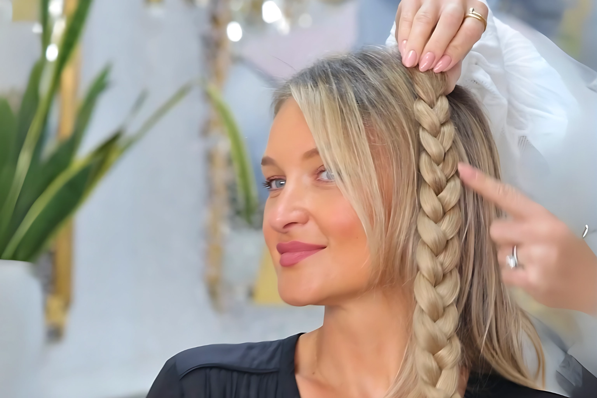
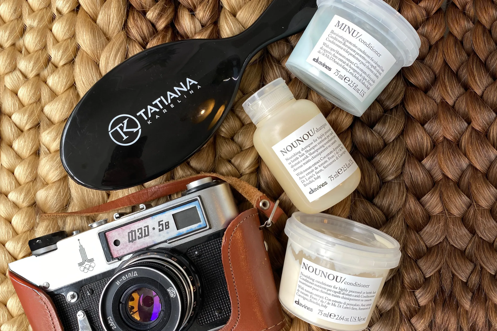

Braids and Ponytails

Playful, creative and transformative
What Are Clip In Braids and Ponytails?
Clip in braids and ponytails are ready to wear hairpieces that attach instantly for a dramatic style update. Each piece is constructed from wefts of natural hair sewn into a braid or ponytail shape and fitted with discreet clips along the base. You simply snap the piece onto your own hair to add length, volume, or a textured braid in seconds, and remove it just as easily.
They are perfect for special occasions, quick transformations, or everyday flair, with no commitment and no damage to your natural hair. Our Russian hair braids and ponytails are hand blended for a seamless colour match, making them long lasting accessories that can be reused time and again.
- Under 15 minutesFitted in the salon
- From £275Braids, boosters and ponytails
- Ready to wearClips in and out in seconds
- 100% Russian hairColour matched without dye
Our signature approach
What Makes Our Braids and Ponytails Different?
Our braids and ponytails are crafted from Russian hair for exceptional softness and natural movement. Each piece uses a special weaving technique that combines shorter strands into longer ones, allowing us to offer high quality at a lower price point. We blend multiple shades by hand into each weft to mirror your own colour and texture, then style into a secure braid or ponytail that feels light.
The coated clips protect your natural hair and ensure a firm grip without slipping or pulling. Every piece undergoes rigorous quality checks and arrives in a reusable clutch for easy storage and travel, so your style looks seamless and fresh every time.

What to expect
The Braids and Ponytails Journey
- ConsultationA brief conversation in salon or by video call to determine your desired style, colour and length.
- Choose your piecePick from our ready to buy collection of pre styled braids and ponytails, or opt for a made to measure piece layered with hand blended shades.
- The fittingWe fit the clips in salon so you can see how it sits, and remove any excess at the ends. In under 15 minutes you walk away with a flawless braid or ponytail.
Before and afters
See Our Braid and Ponytail Transformations


Everything you want to know
Frequently Asked Questions
Why do clients choose Tatiana Karelina as the number one salon for clip in ponytails and braids in the UK?
Our clip in ponytails and braids are crafted from Russian hair and designed to blend seamlessly with your natural hair. They attach securely in seconds, offering instant volume and length without commitment. Unlike factory produced pieces, ours are crafted using shorter Russian hairs integrated into longer strands for the same luxury quality at a more accessible price. Ponytails are shaped to sit naturally whether worn high, mid, or low, and braids are light, flexible, and easy to layer or wear as headbands. With consultations in London, Manchester or online, they remain a favourite and essential hair piece for effortless transformations.
When should I choose braids or ponytails?
Choose braids or ponytails if you want an instant, reusable style change for versatile looks without commitment.
What are clip in ponytails and braids hair extensions?
Clip in ponytails and braids are versatile hairpieces designed to instantly transform your look. They attach securely with discreet clips, adding length, volume, or a statement style in seconds. Whether you want a sleek ponytail for a polished look or a braided headband for a boho vibe, they allow you to switch up your hairstyle without commitment.
What are the benefits of clip in ponytails and braids hair extensions?
The main advantage is instant versatility. Ponytails can be styled high, mid, or low for different effects, while braids can be layered, worn as headbands, or combined with your natural hair for added texture. Both are reusable, long lasting, and perfect for events or everyday wear.
Are clip in ponytails and braids hair extensions easy to apply?
Yes. They are designed for quick application, clipping securely into your natural hair in under a minute. Once in place, they blend seamlessly and stay comfortable throughout the day.
What makes your braids and ponytails hair extensions affordable?
We use a unique weaving technique that incorporates shorter Russian hairs into longer strands. This maximises the use of premium Russian hair, allowing us to deliver luxury clip in ponytails and braids at a more accessible price point while maintaining quality and longevity.
Can I use my old extension hair to make a ponytail?
Absolutely. If you have micro ring extensions that are no longer suitable for refitting, we can repurpose that Russian hair into a custom clip in ponytail. This not only gives your old extensions a second life but also provides excellent value and sustainability.
How long do clip in ponytails and braids hair extensions last?
With proper care, our ponytails and braids can last for many years. Because they are not worn every day like permanent extensions, their lifespan is often far longer than any other method.
Can I style my clip in ponytail or braid hair extensions?
Yes. Our ponytails and braids can be curled, straightened, or heat styled, just like your natural hair. A ponytail can be worn sleek, waved, or tousled, while braids can be styled alone or layered for added drama.
Will people notice I am wearing a clip in ponytail or braid?
No. Because they are crafted from Russian hair and secured discreetly, they blend naturally with your own hair. Once applied, they are virtually undetectable.
How do I care for my clip in ponytails and braids hair extensions?
Caring for clip ins is simple. Wash occasionally with sulphate free shampoo, condition the lengths only, and allow them to air dry. Store in a satin bag or box when not in use to prevent tangling and protect their condition.
A New Look in Under Fifteen Minutes
Book a consultation in London, Manchester or by video and try a Russian hair braid or ponytail on. It clips in, it clips out and it changes everything in between.
Book Consultation